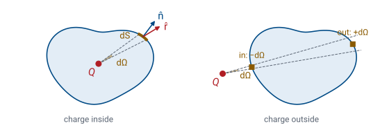
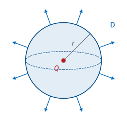
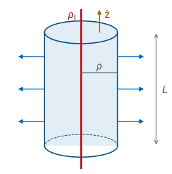
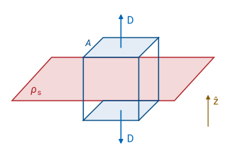
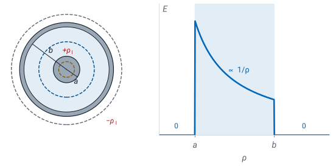
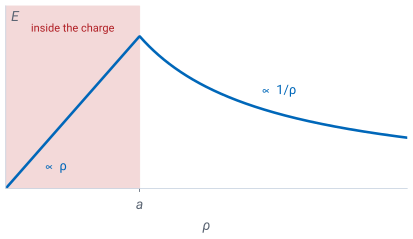

L20 - Gauss’s Law (Integral Form)#
Gauss's Law (Integral Form)
Today we find the field of a symmetric charge without integrating Coulomb’s law.
Lesson 20 · Module 2: Electrostatics · Maj Ellis · Dr. Neil Rogers
Learning Objectives
- I can apply the integral and differential forms of Gauss's Law to calculate the electric field due to charge density in various geometries, including rectangular, cylindrical, and spherical coordinate systems.
Lessons 18 and 19 found the electric field of a charge distribution by adding up Coulomb’s law over every bit of charge. That method always works, but even a ring or a disk takes a page of integration. Today we derive Gauss’s law from Coulomb’s law. It relates the electric flux leaving any closed surface to the charge inside that surface. When the charge has enough symmetry, the law turns the field into a one-line calculation, and we use it to find the field of a point charge, a line charge, a sheet of charge, a coaxial cable, and a cylinder of charge. Lesson 21 turns the same law into a statement about a single point.
Where We Were
Lesson 18: a point charge at the origin:
Lesson 19: a distribution adds up the fields of its pieces.
Lesson 18 gave the field of a point charge \(Q\) in a material of permittivity \(\epsilon\): it points straight away from the charge and falls off as the square of the distance \(r\). The electric flux density \(\mathbf{D} = \epsilon\mathbf{E}\) from Lesson 2 has the same shape with the permittivity removed, so it depends only on the charge. That is why today’s law is written in terms of \(\mathbf{D}\). Lesson 19 added the fields of many small pieces of charge by superposition, which is the second fact we use today.
Electric Flux
The electric flux through a surface \(S\) counts the part of \(\mathbf{D}\) normal to it:
Units: coulombs.
On a closed surface, \(\hat{\mathbf{n}}\) points outward.
The electric flux \(\Psi\) through a surface measures how much of the flux density passes through it. We break the surface into small patches of area \(ds\), each with a unit normal \(\hat{\mathbf{n}}\), and add up the component of \(\mathbf{D}\) along the normal times the area. A field parallel to the surface contributes nothing; a field normal to it contributes \(D\ ds\). Since \(\mathbf{D}\) is in C/m² and \(ds\) in m², flux is measured in coulombs. For a closed surface, one that encloses a volume, we always choose the outward normal, so flux leaving the volume counts as positive and flux entering it as negative. The circle on the integral sign, \(\oint_S\), marks a closed surface.
The Flux of a Point Charge

We start from the flux density of a single point charge \(Q\) and ask how much flux passes through one small patch \(d\mathbf{s}\) of an arbitrary surface. Substituting \(\mathbf{D}\) from Lesson 18 gives the first line. The ratio \(\hat{\mathbf{r}} \cdot d\mathbf{s}/r^2\) is the solid angle \(d\Omega\) the patch subtends at the charge: the dot product keeps only the part of the patch that faces the charge, and dividing by \(r^2\) shrinks it onto a sphere of unit radius. Solid angle is measured in steradians, and the whole sphere around a point is \(4\pi\) steradians. The flux through the patch is therefore \(Q/4\pi\) times its solid angle, no matter how far away the patch sits or how it is tilted. A farther patch is struck by a weaker field, but it must be larger to cover the same cone, and the two effects cancel exactly because Coulomb’s law falls off as \(1/r^2\).
Gauss’s Law
Now we close the surface and add up every patch. If the charge is inside, every cone from the charge leaves the surface once, with a positive contribution, so the solid angles add up to the whole sphere, \(4\pi\), and the flux is exactly \(Q\). A lumpy surface leaves a cone three times, out, in, and out, and the extra pair cancels. If the charge is outside, as in the right side of the figure, each cone enters the surface and leaves it again. The two crossings subtend the same solid angle with opposite signs, so they cancel, and the flux is zero.
Any distribution of charge is a sum of point charges, and the flux of the sum is the sum of the fluxes. Charges inside contribute their charge, and charges outside contribute nothing. That is Gauss’s law: the net electric flux out of any closed surface equals the charge enclosed, \(Q_\text{encl}\). Nothing about the shape or size of the surface appears in the result.
Explore: The Surface Does Not Matter
The widget places a \(+2\) nC and a \(-1\) nC charge near a closed surface and shows a slice through the plane of the charges. The outline is blue where \(\mathbf{D}\) leaves the surface and red where it enters, and it is thicker where \(\mathbf{D}\cdot\hat{\mathbf{n}}\) is larger. The middle readout is the surface integral, computed numerically over the whole three-dimensional surface; it is not looked up from the charge. Grow the sphere, and the area rises while the flux holds at 2.00 nC. Switch to a cube, and the flux density varies along every face, but the total does not change. Slide the surface until it also encloses the \(-1\) nC charge, and the flux drops to 1.00 nC; slide it past the \(+2\) nC charge, and red and blue cancel to zero.
Using Gauss’s Law
Use symmetry to find the direction of \(\mathbf{D}\) and what it depends on.
Choose a Gaussian surface on which \(\mathbf{D}\) is normal and constant, or tangent.
Evaluate \(\oint_S \mathbf{D} \cdot d\mathbf{s}\) and \(Q_\text{encl}\).
Solve for \(D\); then \(\mathbf{E} = \mathbf{D}/\epsilon\).
Gauss’s law holds for every closed surface, but it gives the field only when we can pull \(D\) out of the integral. That requires a surface built to match the symmetry of the charge. On each part of a good Gaussian surface, either \(\mathbf{D}\) is normal to the surface with the same magnitude everywhere on that part, so the integral is \(D\) times the area, or \(\mathbf{D}\) is tangent to the surface, so that part contributes nothing. The surface need not be a physical object; it is an imaginary boundary we draw through the point where we want the field. Three symmetries work: spherical, cylindrical, and planar. The rest of this lesson uses each one.
Point Charge

We test the method on the case we already know. A point charge looks the same from every direction, so \(\mathbf{D}\) can only point radially and can depend only on the distance \(r\). Any other direction would pick out a preferred direction in space, and the charge has none. The surface that matches is a sphere of radius \(r\) centered on the charge. On it, \(\mathbf{D}\) is normal and constant, and the area element from Lesson 17 is \(r^2\sin\theta\ d\theta\ d\phi\), pointing along \(\hat{\mathbf{r}}\). The \(\theta\) integral gives 2 and the \(\phi\) integral gives \(2\pi\), so the flux is \(D_r\) times the area of the sphere, \(4\pi r^2\). The sphere encloses \(Q\), and dividing recovers Coulomb’s law from Lesson 18 in three lines.
Infinite Line Charge

An infinite line of charge with \(\rho_l\) coulombs per meter lies on the \(z\) axis. Moving along \(z\) or rotating about the axis leaves the line unchanged, so \(\mathbf{D}\) cannot depend on \(z\) or \(\phi\). Turning the picture upside down also leaves it unchanged, so \(\mathbf{D}\) has no \(z\) component, and it points radially, along \(\hat{\boldsymbol{\rho}}\). The matching surface is a closed cylinder of radius \(\rho\) and length \(L\). On the curved side, \(\mathbf{D}\) is normal and constant, and the area element is \(\rho\ d\phi\ dz\). On the flat top and bottom, the normal is \(\pm\hat{\mathbf{z}}\) and \(\mathbf{D}\) is tangent, so they contribute nothing. The side’s area is \(2\pi\rho L\), and the cylinder encloses a length \(L\) of line, or a charge \(\rho_l L\). The length cancels, and the field falls off as \(1/\rho\), more slowly than a point charge’s. Lesson 19 reached the same result by integrating Coulomb’s law along the whole line.
Infinite Sheet of Charge

An infinite sheet in the plane \(z = 0\) carries \(\rho_s\) coulombs per square meter. Sliding the sheet in \(x\) or \(y\) leaves it unchanged, so \(\mathbf{D}\) depends at most on \(z\) and has no \(x\) or \(y\) component. Reflecting the picture through the sheet swaps the two sides, so \(\mathbf{D}\) points away from the sheet on both sides with the same magnitude: \(+\hat{\mathbf{z}}\) above and \(-\hat{\mathbf{z}}\) below. The matching surface is a pillbox, a box with two faces of area \(A\) parallel to the sheet, one on each side. On both faces \(\mathbf{D}\) points outward, so each contributes \(D_z A\); on the sides, \(\mathbf{D}\) is tangent and contributes nothing. The box encloses a charge \(\rho_s A\). The area cancels, and so does the height of the box: the field of an infinite sheet is the same at every distance from it.
The Coaxial Line

A coaxial line carries \(+\rho_l\) per meter on the surface of its inner conductor, radius \(a\), and \(-\rho_l\) on the inside of its shield, radius \(b\). The line has the same cylindrical symmetry as the line charge, so we use the same closed cylinder of radius \(\rho\) and length \(L\), and only its side contributes: \(2\pi\rho L\ D_\rho = Q_\text{encl}\). All that changes from one region to the next is the charge enclosed.
Inside the inner conductor, \(\rho < a\): the charge sits on the conductor’s surface, so the cylinder encloses none, and the field is zero.
Between the conductors, \(a < \rho < b\): the cylinder encloses \(\rho_l L\), exactly as for the line charge, and the field falls as \(1/\rho\) in the dielectric.
Outside the shield, \(\rho > b\): the cylinder encloses \(\rho_l L - \rho_l L = 0\), and the field is zero.
The field lives only in the dielectric between the conductors. That is why a coaxial cable neither radiates nor picks up interference from its surroundings, and it is the field that Lesson 25 integrates to find the cable’s capacitance \(C'\).
Worked Example: The Field in RG-58
\(\rho_l = 1\ \text{nC/m}\), \(a = 0.405\) mm, \(b = 1.475\) mm, \(\epsilon_r = 2.25\):
Worked example — the field inside RG-58
RG-58 from Lesson 6 has an inner conductor of radius \(a = 0.405\) mm, a shield of radius \(b = 1.475\) mm, and a polyethylene dielectric with \(\epsilon_r = 2.25\). Suppose the inner conductor carries \(\rho_l = 1\) nC per meter. Between the conductors,
At the surface of the inner conductor, \(\rho = a\):
Since \(E \propto 1/\rho\), the field at the shield is smaller by the ratio of the radii:
The field is strongest at the surface of the inner conductor, which is where a cable breaks down first when it is driven too hard. Lesson 25 integrates this field from \(a\) to \(b\) to find the voltage between the conductors.
A Cylinder of Volume Charge

Now the charge fills a volume: an infinitely long cylinder of radius \(a\) carries a uniform volume charge density \(\rho_v\), in C/m³. The symmetry is cylindrical again, so the Gaussian surface is the same closed cylinder and the left side is again \(2\pi\rho L\ D_\rho\). The charge enclosed is the integral of \(\rho_v\) over the part of the charged region inside the Gaussian cylinder. For a Gaussian cylinder inside the charge, \(\rho < a\), using \(\rho'\) for the integration variable,
and for one outside the charge, \(\rho > a\), the radial integral stops at \(a\) and gives \(\rho_v \pi a^2 L\).
Inside the charge, the enclosed charge grows as \(\rho^2\) while the area grows as \(\rho\), so the field grows in proportion to \(\rho\) and is zero on the axis. Outside, the enclosed charge stops growing at \(\rho_v\pi a^2 L\), and the field is that of a line charge with \(\rho_l = \rho_v\pi a^2\). The two expressions agree at \(\rho = a\), so the field is continuous at the edge of the charge.
When Gauss’s Law Helps
Symmetry |
Gaussian surface |
Example |
|---|---|---|
Spherical |
sphere |
point charge, charged ball |
Cylindrical |
closed cylinder |
line charge, coax |
Planar |
pillbox |
infinite sheet |
Without one of these, return to Coulomb’s law.
Gauss’s law is true for every charge distribution and every closed surface, but it is a tool for finding the field only when symmetry lets us pull \(D\) out of the integral. A finite line of charge, a ring, or a disk has no Gaussian surface on which \(\mathbf{D}\) is constant, so Gauss’s law still holds for them but tells us only the total flux, not the field at a point. For those, the direct integration of Lesson 19 is the way. In practice, the symmetric cases cover more ground than they seem to: far from a finite object, its field approaches that of a point charge, and close to the middle of a long wire or a large plate, it approaches that of a line or a sheet.
Summary
Symbol / idea |
What it is |
Number to remember |
|---|---|---|
Electric flux \(\Psi\) |
\(\int_S \mathbf{D}\cdot d\mathbf{s}\), outward normal on a closed surface |
coulombs |
Gauss’s law |
Net flux out of a closed surface equals the charge inside |
\(\oint_S \mathbf{D}\cdot d\mathbf{s} = Q_\text{encl}\) |
Why it holds |
Point-charge flux is \(Q/4\pi\) per steradian |
\(4\pi\) sr inside, 0 outside |
Point charge |
Sphere |
\(E = \frac{Q}{4\pi\epsilon r^2}\) |
Line charge |
Closed cylinder; top and bottom give zero |
\(E = \frac{\rho_l}{2\pi\epsilon\rho}\) |
Sheet |
Pillbox; the sides give zero |
\(E = \frac{\rho_s}{2\epsilon}\), at every distance |
Coaxial line |
Field only between the conductors |
\(\frac{\rho_l}{2\pi\epsilon\rho}\) for \(a < \rho < b\) |
Cylinder of \(\rho_v\) |
Grows inside, line-charge field outside |
\(\frac{\rho_v\rho}{2\epsilon}\), then \(\frac{\rho_v a^2}{2\epsilon\rho}\) |
Practice
Where This Is Going
Lesson 21: shrink the Gaussian surface to a point, and Gauss’s law becomes \(\nabla \cdot \mathbf{D} = \rho_v\).
Lesson 25: the coax field gives the capacitance per meter, \(C'\).
Today Gauss’s law came out of Coulomb’s law and the geometry of solid angle, and symmetry turned it into a quick way to find the field. The integral form relates the field on a surface to the charge in a whole volume. Lesson 21 shrinks that volume to a single point, using the divergence theorem from Lesson 17, and gets the differential form, which reads the charge density at any point directly from the field. Lesson 25 returns to today’s coaxial field and derives the capacitance per meter, \(C'\), that Lesson 6 quoted for RG-58.
Before Lesson 21, read sections 5.7 and 5.8 of Ellingson, Electromagnetics, Vol. 1, and review the divergence and the divergence theorem from Lesson 17.